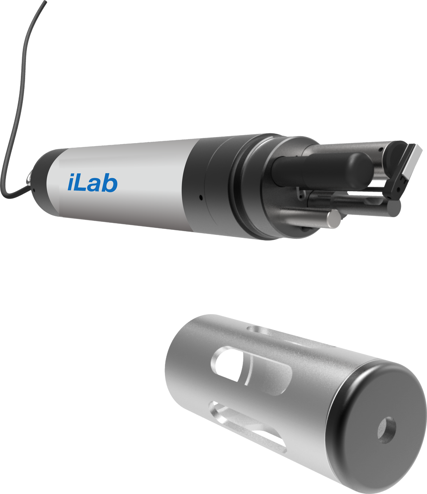

Multi-parameter water quality sonde
iLab 901
Up to seven water quality parameters at once, from one rugged sonde and its handheld.
The iLab 901 is built for long-term water quality monitoring. Fit it with up to seven sensors, chosen from thirteen measurements, and it cleans them itself so the data stays accurate for longer.
The handheld shows each reading on a 3.5 inch colour screen and stores more than 100,000 of them, with a GPS receiver and USB built in.

What you get
Seven at once
One sonde carries physical, electrochemical, optical and ion-selective sensors, picked for the job.
Cleans itself
A self-cleaning system keeps the sensors clear, so the iLab holds accurate data for longer.
Long deployments
Set the sampling interval to suit, and stretch the time the sonde runs on its own lithium cells.
Readings in your hand
A 3.5 inch colour screen with an adjustable backlight shows results live, with fast processing on board.
Built for the field
An IP68 sonde and an IP67 handheld with high-impact rubber gaskets and a shape that is easy to hold.
Located and connected
GPS and USB are built in and Bluetooth is optional. The sonde speaks Modbus over RS485.
Where it works
Rivers, lakes and reservoirs
Online multi-parameter water quality monitoring.
Source water
Drinking water sources, groundwater and sea water.
Environmental monitoring
Long-term water quality records.
Agriculture
Water quality monitoring for agriculture.